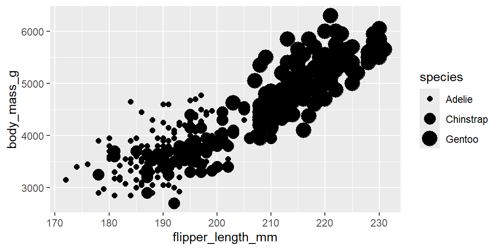

Deepen your understanding of ggplot2. Explore the layered grammar of graphics—how aesthetic mappings, geometric objects and facets combine to build complex plots.
Master aesthetic mappings. Map variables to color, shape, size and alpha correctly. Avoid mapping categorical variables to size or alpha (it implies a false ordering) and note that mapping a categorical variable to shape uses only six shapes, so additional groups are dropped.
Layer multiple geoms. Add multiple geoms to a plot (e.g., points and smooth lines) and distinguish between global and local aesthetic mappings. Use the group aesthetic to draw separate curves for each category.
Layered grammar of graphics – Every plot can be built from layers consisting of data, aesthetic mappings, geoms, optional statistical transformations, position adjustments and a coordinate system. Building plots layer by layer allows incremental refinement.
Aesthetic mappings – The aes() function connects variables to graphical attributes. Mapping a categorical variable to color is generally safe; mapping it to shape works but only six shapes are available; mapping to size or alpha is discouraged and yields warnings.
# Mapping a categorical variable to size or alpha generates warningsggplot(penguins, aes(x =flipper_length_mm, y =body_mass_g, size =species))+geom_point()# Warning: Using size for a discrete variable is not advised

Mappings defined in ggplot() apply globally, while mappings inside a geom override them for that layer.
# Global mapping applies color to both geomsggplot(penguins, aes(x =flipper_length_mm, y =body_mass_g, color =species))+geom_point()+geom_smooth(method ="loess", se =FALSE)
# Local mapping overrides global color for the point layer onlyggplot(penguins, aes(x =flipper_length_mm, y =body_mass_g))+geom_point(aes(color =species))+geom_smooth(method ="loess", se =FALSE)
Layering geoms – Different geoms (e.g., geom_point, geom_smooth, geom_bar) draw different types of objects. Overlaying geoms reveals multiple aspects of the data. When using geoms like geom_smooth(), ggplot2 automatically groups data by discrete variables; you can explicitly set group to control grouping.
# Overlay scatterplot with separate curves per speciesggplot(penguins, aes(x =flipper_length_mm, y =body_mass_g))+geom_point(aes(color =species))+geom_smooth(aes(group =species), method ="loess", se =FALSE)
Facets – Use facet_wrap() to create a grid of subplots for one categorical variable, and facet_grid() for two variables. You can allow axes to vary across facets with the scales argument.
# Facet by species and sex with free y‑axisggplot(penguins, aes(x =flipper_length_mm, y =body_mass_g))+geom_point()+facet_grid(species~sex, scales ="free_y")
Coordinate systems – Transform plots using different coordinate systems to improve interpretability. For example, swap axes using coord_flip() or create a polar bar chart with coord_polar().